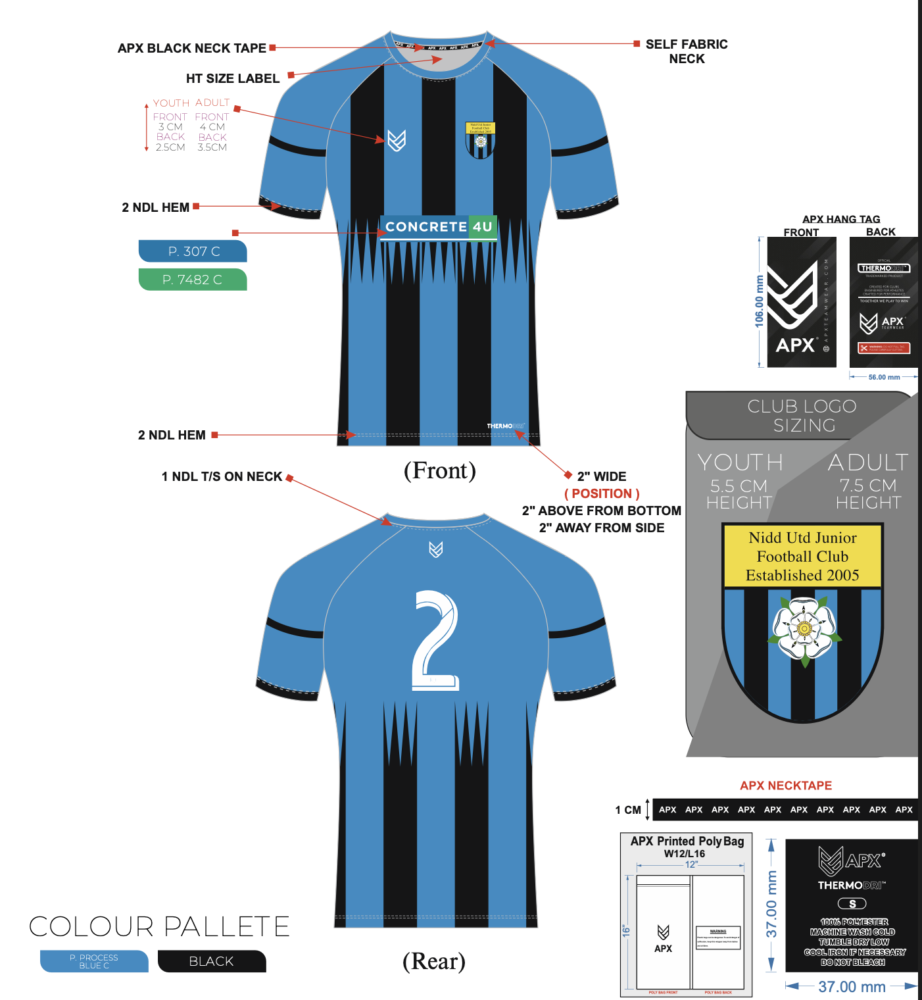
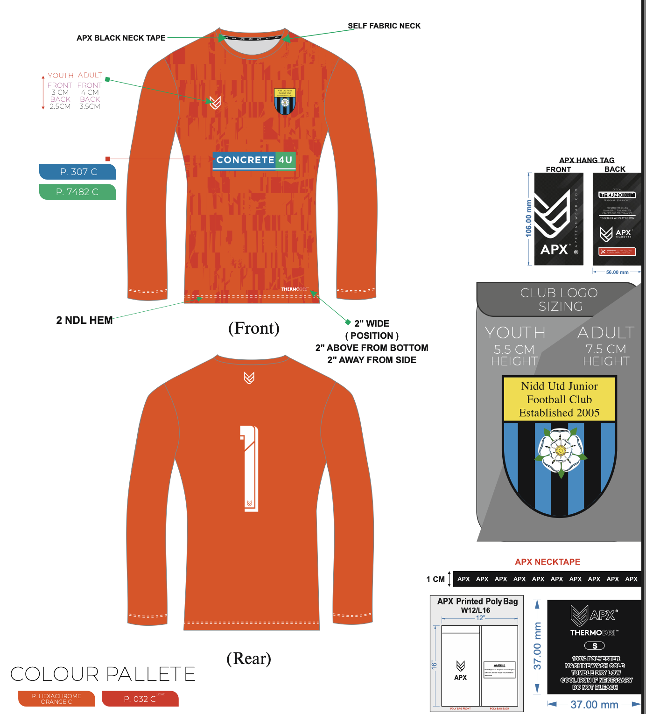

Coach's Guidance for Ordering New Sponsored Match Kit
New Match Kit Sponsors This Season
If your team has picked up a new match kit sponsor this season, please follow the process below. The initial order of match kit tops is placed centrally by the club and paid for from the sponsor's fees, so it costs your players nothing.
Here's what we need you to do.

What You Need to Collect
Orders for the new sponsored match kit tops are placed centrally by the club, not through the club shop. Please collect the following from each of your players, and submit it to John Ward:
- - Long sleeve or short sleeve: their preference
- - Squad number: needed to personalise the top
- - Size needed: use our sizing chart to help them find the best fit
Only one top per player can be ordered as part of this initial bulk order.
You will also need to obtain a high-resolution logo from your sponsor and pass this to John Ward along with your squad's details, so it can be used on the tops. If the sponsor has specific Pantone colour codes for their logo, please supply those as well.
Please submit your whole squad's details to John Ward in one single file, once you have collected everyone's information - not player-by-player as they come in. This keeps the order simple and avoids confusion.
Please note there is at least a six-week wait on these orders - submit your players' details to John Ward as soon as possible to avoid delays.

What's Covered
The club will place the order and cover the cost of this bulk purchase from the sponsor money, so parents will not be asked to pay for this initial top.
This is not a monetary refund to parents - the club is covering the cost of the bulk order directly, rather than reimbursing anyone who has already paid.
The remainder of the sponsorship money, once the kit order is covered, goes towards the club's core running costs.
For more detail on how sponsorship funds are used, see our Sponsor and Match Kit Policy.
Shorts and socks are not included - parents still need to purchase these directly from the club shop as normal.
Delivery
Once the order arrives, it'll be passed to you to distribute amongst your players.
Future or Extra Tops
Once the initial sponsored order has been delivered, any further purchases of the sponsored match kit top - a replacement, a top for a new player joining the team, or an extra top - should be bought directly from the club shop rather than through you. Just make sure parents know to select the correct sponsor when ordering.